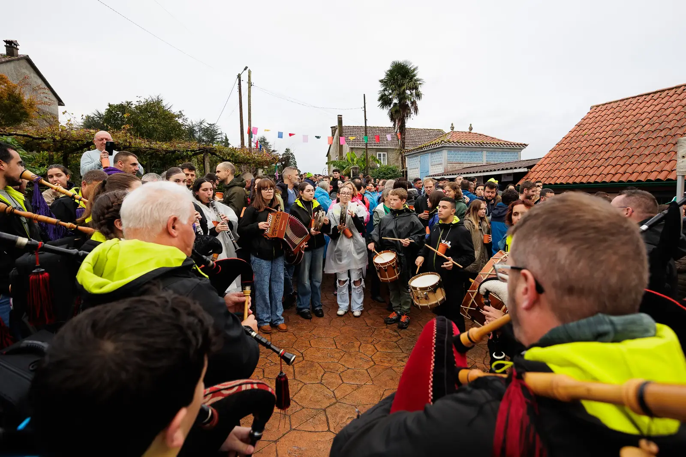
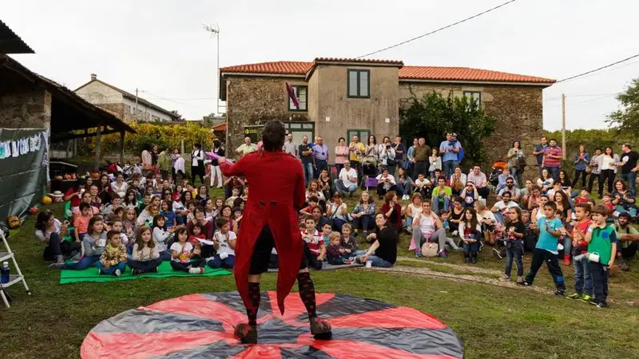
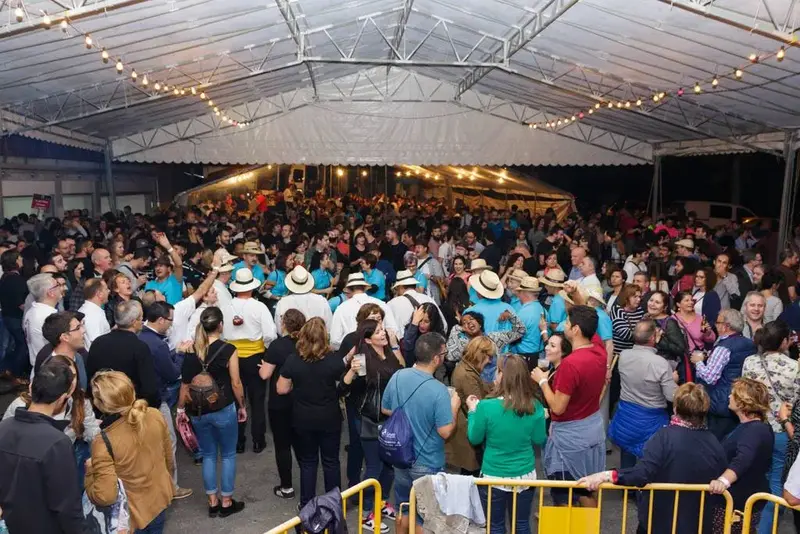
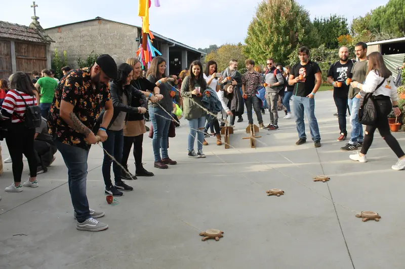

O Espazo Activo da Ulla é un espazo de cultura, encontro, lecer e animación. Nace no seo da Asociación Cultural San Campio no ano 2001 a partir de contactos persoais entre membros de asociacións.
A realización deste proxecto fundaméntase no valeiro existente de actividades alternativas nesta zona do rural, e na falla de espazos para o encontro; na procura da promoción e a cooperación cultural, a difusión e o espallamento da cultura das terras da Ulla en particular e da galega en xeral.
- Promocionar alternativas socioculturais na comarca da Ulla.
- Favorecer o desenvolvemento comunitario e endóxeno do territorio, poñendo en valor o rural.
- Recuperar espazos para o encontro aproveitando ao máximo os recursos que ofrece a zona.
- Incentivar o espírito creativo, xerando actividades, obradoiros, espectáculos, mostras, concertos…
Ten por obxectivos:
Actualmente realízase na última fin de semana do mes de outubro. Durante estes dous días xérase un gran espazo aberto e de convivencia, fomentando o intercambio de experiencias entre os asistentes, e entre estes e mailos veciños/as da zona a través das diferentes actividades.
A actividades estrela é o “Pasabodeghas” que se celebra o sábado pola tarde; unha ruta gaiteira por adegas-casas que se converten en espazos de gastronomía e cultura.
Pola noite no espazo “Festexarte” teñen lugar os concertos de grupos de música folk, ska, rock...
O domingo celébrase unha foliada con sesión vermú e tapeo.
A nivel xeral, hai un bo nivel de participación e implicación. Cóntase coa colaboración de diferentes axentes comunitarios (asociacións, grupos musicais, empresas, organismos públicos)… e tamén de particulares.
En definitiva, este proxecto interxeracional busca un uso activo e creativo do lecer da poboación xeral (nenos/as, mocidade, persoas adultas e maiores) ao tempo que pon en valor as manifestacións culturais galegas como parte do noso patrimonio cultural.


